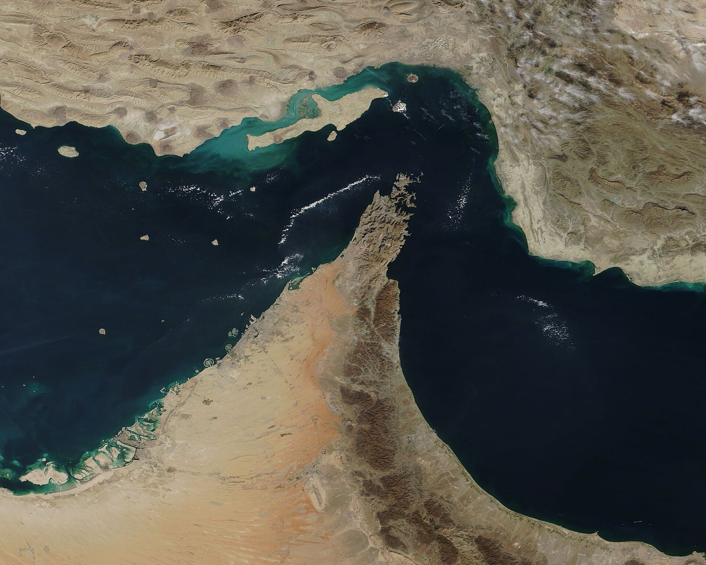
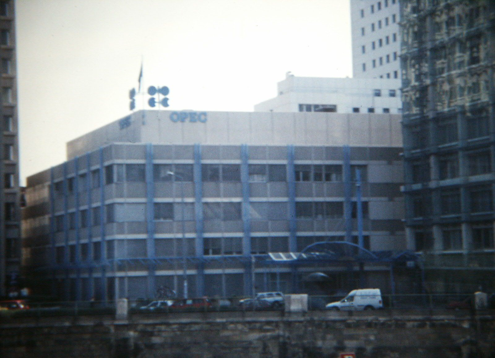
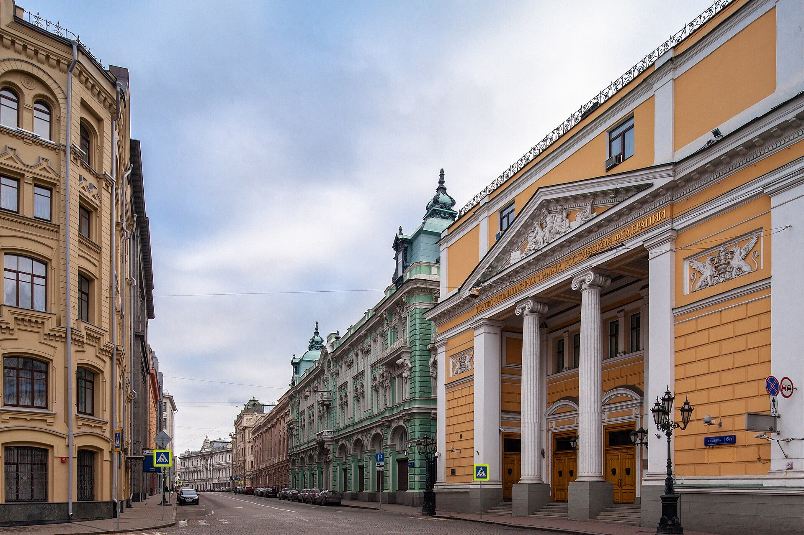

<!doctype html><html><head><meta charset="utf-8">
<!-- Карусели PRO v6 (Арт-директор, 26.10, ред. 2): Ср «Индикатор», Пт «Актив», Сб «Итоги недели», Вс «Опрос» — неделя 02–08.11.
     Тексты и цифры — только Редактор: editor/knowledge/дизайн/неделя-pro-02-08.11.md и рубрики-pro-v2.md (+ данные со страниц готовых гайдов для Вс).
     Пунктирная рамка .tbd / .tbdl = цифра или текст «[в день]» — Редактор подставит в день выхода. Стили дней — как у Дизайнера в v5 (swap-v4).
     КВАДРАТ 1:1 (27.10, заметка владельца «слишком узкий»): 1080×1080 → 1620×1620, рендер render-sq.js; перекомпоновка — блок SQ ниже -->
<link href="fonts/fonts.css" rel="stylesheet">
<style>
*{box-sizing:border-box;margin:0;padding:0}
body{background:#222;font-family:Inter}
.s{width:1080px;height:1350px;position:relative;overflow:hidden;margin:0 0 20px}
.s>*{position:absolute}
.hd{z-index:5;left:60px;right:60px;top:52px;display:flex;align-items:center;justify-content:space-between}
.hd .lg{display:flex;align-items:center;gap:14px;font:800 22px Inter;letter-spacing:.14em}
.hd .lg img{width:44px;height:44px;border-radius:11px}
.hd .tag{font:800 22px Inter;letter-spacing:.08em;padding:9px 20px;border-radius:99px}
.k{left:60px;right:60px;top:150px;font:800 22px Inter;letter-spacing:.14em;text-transform:uppercase}
.cnt{right:60px;bottom:118px;font:800 22px Inter;letter-spacing:.06em}
.src{left:60px;right:240px;bottom:112px;font:500 20px/1.35 Inter}
.ft{left:0;right:0;bottom:0;height:68px;display:flex;flex-direction:column;align-items:center;justify-content:center;font:500 14px/1.5 Inter}
.pc{background:#fff;padding:14px 14px 50px;box-shadow:0 24px 50px rgba(0,0,0,.35);z-index:3}
.pc img{display:block;width:100%;height:100%;object-fit:cover}
.pc p{position:absolute;left:16px;right:16px;bottom:13px;font:600 18px Inter;color:#333}
.sec{font:800 20px Inter;letter-spacing:.16em;text-transform:uppercase;margin-bottom:12px}
/* поле «в день» — пунктир, цифру ставит Редактор в день выхода */
.tbd{display:inline-block;border:3px dashed currentColor;border-radius:.18em;padding:0 .16em;opacity:.6;line-height:1.1}
.tbdl{display:inline-block;font:800 18px Inter;letter-spacing:.1em;text-transform:uppercase;border:2px dashed currentColor;border-radius:8px;padding:4px 10px;opacity:.75;vertical-align:middle}
.up{color:#1E8E5A}.dn{color:#C0392B}

/* ===== СР · Индикатор: золото + вишня, Unbounded ===== */
.wed{background:radial-gradient(900px 700px at 82% 8%,#E4C47E,#C9A24B 58%,#B38A37);color:#3A0A16}
.wed .lg{color:#3A0A16}.wed .tag{background:#5A1426;color:#F2D79A}
.wed .k,.wed .cnt,.wed .sec{color:#5A1426}.wed .src{color:rgba(58,10,22,.78)}.wed .ft{background:#3A0A16;color:rgba(255,255,255,.55)}
.wed h1{left:60px;right:60px;font:800 62px/1.08 Unbounded;letter-spacing:-.03em;color:#3A0A16}
.wed .big{font:800 220px/1 Unbounded;letter-spacing:-.06em;color:#5A1426}
.wed .trio{left:60px;right:60px;display:flex;gap:18px}
.wed .trio div{flex:1;border-top:3px solid rgba(90,20,38,.45);padding-top:14px;font:600 23px Inter;color:rgba(58,10,22,.85)}
.wed .trio b{display:block;font:800 44px Unbounded;color:#5A1426;margin-top:8px;letter-spacing:-.03em}
.wed .vd{left:60px;right:60px;display:flex;gap:14px;align-items:center;font:700 24px Inter}
.wed .vd span{padding:10px 20px;border-radius:99px;font:800 24px Inter}
.wed .note{left:60px;right:60px;background:rgba(58,10,22,.92);color:#F7E7C2;border-radius:24px;padding:28px 32px;font:500 29px/1.4 Inter}
.wed .note b{color:#fff}
.wed .pt{display:flex;gap:26px;padding:24px 0;border-top:2px solid rgba(90,20,38,.3)}
.wed .pt em{flex:none;font:800 50px/1 Unbounded;color:#5A1426;font-style:normal;width:64px}
.wed .pt div{font:500 29px/1.38 Inter}.wed .pt b{font-weight:800}
.wed .tl{background:rgba(255,248,230,.6);border:2px solid rgba(90,20,38,.18)}
.wed .tline{left:60px;right:60px}
.wed .tr{display:flex;gap:26px;align-items:baseline;padding:20px 0;border-top:2px solid rgba(90,20,38,.3)}
.wed .tr b{flex:none;width:200px;font:800 34px Unbounded;letter-spacing:-.02em;color:#5A1426}
.wed .tr span{font:500 28px/1.36 Inter}
.wed .tr.now{background:#5A1426;color:#F7E7C2;border-radius:18px;padding:20px 22px;margin:4px -22px;border:0}
.wed .tr.now b{color:#F2D79A}

/* v2 (27.10, правка владельца): на золоте текст — на плашках */
.wed .k,.wed .pl,.wed .vd,.wed .src,.wed .cnt{background:rgba(255,248,230,.72);border-radius:12px;box-shadow:0 2px 0 rgba(90,20,38,.08)}
.wed .k{right:auto;padding:10px 16px;font-size:20px}
.wed .pl{padding:12px 18px;right:auto}
.wed .vd{right:auto;padding:12px 20px}
.wed .src{right:auto;max-width:760px;padding:10px 14px;bottom:104px;color:#3A0A16}
.wed .cnt{padding:8px 14px;bottom:104px}
.wed>.sec{background:#5A1426;color:#F2D79A;padding:14px 20px;border-radius:12px}
.wed .trio div{background:rgba(255,248,230,.62);border:2px solid rgba(90,20,38,.18);border-top:2px solid rgba(90,20,38,.18);border-radius:18px;padding:16px 18px}
.wed .pt{background:rgba(255,248,230,.66);border:2px solid rgba(90,20,38,.18);border-radius:22px;padding:24px 26px;margin-bottom:16px}
.wed .tline{background:rgba(255,248,230,.62);border:2px solid rgba(90,20,38,.18);border-radius:24px;padding:18px 26px 6px}
.wed .tline .tr:first-of-type{border-top:0}
.wed .tline .tr{padding:16px 0}.wed .tline .tr.now{padding:16px 22px}
.wed .nx{left:60px;right:60px;background:#5A1426;color:#F7E7C2;border-radius:28px;padding:30px 34px}
.wed .nx .r{display:flex;gap:28px;align-items:baseline;padding:18px 0;border-top:1px solid rgba(247,231,194,.25)}
.wed .nx .r b{flex:none;width:250px;font:800 32px Unbounded;color:#fff;letter-spacing:-.02em}
.wed .nx .r span{font:500 28px/1.35 Inter}
.tiles{left:60px;right:60px;display:flex;flex-direction:column;gap:16px}
.tl{border-radius:24px;padding:24px 28px;display:flex;gap:24px;align-items:flex-start}
.tl .nm{flex:none;width:200px;font:800 32px Inter}
.tl .nm small{display:block;font:800 21px Inter;margin-top:8px;letter-spacing:.02em}
.tl .tx{font:500 27px/1.38 Inter}

/* ===== ПТ · Актив: графит + золото, моноширинный ===== */
.fri{background:radial-gradient(900px 600px at 78% 22%,#2A2416,#0D1110 70%);color:#ECE6D6}
.fri .lg{color:#ECE6D6}.fri .tag{background:#C9A24B;color:#0D1110}
.fri .k,.fri .cnt,.fri .sec{color:#C9A24B}.fri .src{color:rgba(236,230,214,.62)}.fri .ft{background:#060807;color:rgba(255,255,255,.45)}
.fri h1{left:60px;right:60px;font:800 60px/1.08 Inter;letter-spacing:-.025em;color:#fff}
.fri .price{left:60px;font:800 150px/1 'JetBrains Mono';letter-spacing:-.04em;color:#fff}
.fri .chips{left:60px;right:60px;display:flex;gap:14px;flex-wrap:wrap}
.fri .chips span{font:700 25px 'JetBrains Mono';padding:10px 18px;border:2px solid #E0574B;color:#FF8A7E;border-radius:10px}
.fri .chips span.tb{border:2px dashed rgba(236,230,214,.5);color:rgba(236,230,214,.75)}
.fri .ph{left:0;right:0;top:0;height:560px}
.fri .ph img{width:100%;height:100%;object-fit:cover;filter:saturate(.8) contrast(1.05)}
.fri .ph:after{content:"";position:absolute;inset:0;background:linear-gradient(rgba(13,17,16,.45),rgba(13,17,16,0) 30%,rgba(13,17,16,.25) 60%,#0D1110)}
.fri .band{left:60px;right:60px;height:330px;border-radius:22px;overflow:hidden}
.fri .band img{width:100%;height:100%;object-fit:cover;filter:saturate(.75)}
.fri .bcap{left:60px;right:60px;font:500 20px 'JetBrains Mono';color:#C9BFA8}
.fri .dv{background:#151A18;border:1px solid #2A2F2B;border-radius:22px;padding:22px 28px;margin-bottom:16px}
.fri .dv .t{font:800 32px Inter;color:#fff;margin-bottom:6px}
.fri .dv .t i{font:800 26px 'JetBrains Mono';color:#C9A24B;font-style:normal;margin-right:16px}
.fri .dv .x{font:500 27px/1.38 Inter;color:#D8D0BC}
.fri .tbl{left:60px;right:60px;border-top:2px solid #C9A24B}
.fri .tbl .r{display:flex;justify-content:space-between;align-items:baseline;gap:20px;padding:22px 0;border-bottom:1px solid rgba(201,162,75,.3);font:600 28px Inter;color:#C9BFA8}
.fri .tbl .r b{font:800 40px 'JetBrains Mono';color:#fff;letter-spacing:-.03em;white-space:nowrap}
.fri .tl{background:#151A18;border:1px solid #2A2F2B}
.fri .tl .nm{color:#fff;font-family:'JetBrains Mono';font-size:30px}
.fri .tl .tx{color:#D8D0BC}
.fri .up{color:#3DDC97}.fri .dn{color:#FF8A7E}
.fri .fy{left:60px;right:60px;border:2px solid #C9A24B;border-radius:24px;padding:24px 30px;font:500 28px/1.38 Inter;color:#ECE6D6}
.fri .fy b{color:#C9A24B}

/* ===== СБ · Итоги недели: газета, Playfair + вишня ===== */
.sat{background:#F3F1EC;color:#141414}
.sat .lg{color:#141414}.sat .tag{background:#5A1426;color:#F3F1EC}
.sat .k,.sat .cnt,.sat .sec{color:#5A1426}.sat .src{color:#555}.sat .ft{background:#5A1426;color:rgba(255,255,255,.6)}
.sat .rule{left:60px;right:60px;height:4px;background:#141414}
.sat h1{left:60px;right:60px;font:900 60px/1.08 'Playfair Display';letter-spacing:-.01em}
.sat .mast{left:60px;right:60px;top:130px;display:flex;justify-content:space-between;align-items:flex-end;border-bottom:2px solid #141414;padding-bottom:12px}
.sat .mast b{font:900 82px/1 'Playfair Display'}
.sat .mast span{font:800 22px Inter;letter-spacing:.1em;color:#5A1426}
.sat .phb{left:60px;right:60px;overflow:hidden}
.sat .phb img{width:100%;height:100%;object-fit:cover;filter:grayscale(1) contrast(1.1)}
.sat .cap{left:60px;right:60px;font:500 20px Inter;color:#555}
.sat .mk{left:60px;right:60px;display:flex;align-items:center;gap:28px}
.sat .mk .ch{font:900 92px/1 'Playfair Display';letter-spacing:-.02em;color:#141414}
.sat .mk .lv{font:600 26px/1.35 Inter;color:#333}
.sat .mk .lv b{display:block;font:800 32px Inter;color:#141414}
.sat .blk{left:60px;right:60px}
.sat .bk{padding:20px 0;border-top:2px solid #141414}
.sat .bk p{font:500 28px/1.4 Inter}
.sat .bk p b{font-weight:800}
.sat .fy{left:60px;right:60px;display:flex;gap:22px;align-items:flex-start;background:#fff;border-left:8px solid #5A1426;padding:22px 28px}
.sat .fy i{flex:none;font:800 20px Inter;letter-spacing:.12em;background:#5A1426;color:#fff;padding:7px 12px;font-style:normal;margin-top:4px}
.sat .fy p{font:600 28px/1.38 Inter}
.sat .grid4{left:60px;right:60px;display:grid;grid-template-columns:1fr 1fr;border-top:2px solid #141414}
.sat .g{padding:16px 20px 16px 0;border-bottom:1px solid #999}
.sat .g:nth-child(odd){border-right:1px solid #999}.sat .g:nth-child(even){padding-left:24px}
.sat .g .n{font:800 22px Inter;letter-spacing:.1em;color:#5A1426}
.sat .g .c{font:900 50px/1.15 'Playfair Display';margin:4px 0}
.sat .tbd{font-family:Inter;font-weight:800;letter-spacing:0;white-space:nowrap}
.sat .mk .ch .tbd{font-size:72px}
.sat .g .c .tbd{font-size:40px}
.sat .wide{display:block;width:100%;padding:18px 20px;font:600 28px Inter;opacity:.5}
.sat .g .d{font:500 22px Inter;color:#444}
.sat .blk.v2 .bk{padding:14px 0}
.sat .blk.v2 .sec{font-size:20px}
.sat .blk.v2 .bk p{font:500 25px/1.36 Inter}
.sat .blk.v2 .bk p.ln{font:600 22px/1.35 Inter;color:#444;margin-top:6px}
.sat .blk.v2 .bk p.chg{font:500 21px/1.35 Inter;color:#555;margin-top:8px}.sat .blk.v2 .bk p.chg b{color:#5A1426}
.sat .blk.v2 .fy{position:static;margin-top:6px;padding:18px 24px}.sat .blk.v2 .fy p{font:600 24px/1.36 Inter}
.sat .blk.lg2 .bk{padding:24px 0}.sat .blk.lg2 .sec{font-size:22px}.sat .blk.lg2 .bk p{font-size:30px}.sat .blk.lg2 .bk p.chg{font-size:24px;margin-top:12px}
.sat .blk.lg2 .fy{margin-top:18px;padding:24px 28px}.sat .blk.lg2 .fy p{font-size:28px}
.sat .dts{left:60px;right:60px;border-top:2px solid #141414;padding-top:14px}
.sat .dts div{display:flex;gap:22px;padding:10px 0;border-bottom:1px solid #bbb;font:500 25px/1.3 Inter}.sat .dts b{flex:none;width:130px;font-weight:800;color:#5A1426}

/* ===== ВС · Опрос: вишня + розовый, Unbounded ===== */
.sun{background:radial-gradient(900px 800px at 85% 15%,#7A1C34,#4A0F1E 60%,#300812);color:#FBE7EC}
.sun .lg{color:#FBE7EC}.sun .tag{background:#F2C6CE;color:#4A0F1E}
.sun .k,.sun .cnt,.sun .sec{color:#F2C6CE}.sun .src{color:rgba(251,231,236,.62)}.sun .ft{background:#22050C;color:rgba(255,255,255,.45)}
.sun h1{left:60px;right:60px;font:800 64px/1.06 Unbounded;letter-spacing:-.03em;color:#fff}
.sun .vn{font:800 220px/1 Unbounded;color:transparent;-webkit-text-stroke:3px rgba(242,198,206,.45)}
.sun .gc{border-radius:14px;overflow:hidden;box-shadow:0 20px 44px rgba(0,0,0,.45);border:2px solid rgba(242,198,206,.35)}
.sun .gc img{display:block;width:100%;height:100%;object-fit:cover}
.sun .row{display:flex;gap:26px;align-items:center;padding:18px 0;border-top:1px solid rgba(242,198,206,.3)}
.sun .row .gc{flex:none;width:330px;height:186px}
.sun .row b{display:block;font:800 34px/1.15 Unbounded;color:#fff;margin-bottom:8px}
.sun .row span{font:500 24px/1.35 Inter;color:#F2C6CE}
.sun .row em{margin-left:auto;font:800 64px Unbounded;color:transparent;-webkit-text-stroke:2px rgba(242,198,206,.6);font-style:normal}
.sun .lst{left:60px;right:60px}
.sun .li{display:flex;gap:24px;padding:18px 0;border-top:1px solid rgba(242,198,206,.3);font:500 28px/1.36 Inter;color:#FBE7EC}
.sun .li em{flex:none;font:800 28px Unbounded;color:#F2C6CE;font-style:normal;width:56px}
.sun .why{left:60px;right:60px;background:rgba(242,198,206,.12);border:1px solid rgba(242,198,206,.35);border-radius:24px;padding:24px 30px;font:500 27px/1.4 Inter}
.sun .why b{color:#fff}
.sun .btn{left:60px;display:inline-flex;gap:14px;align-items:center;background:#F2C6CE;color:#4A0F1E;font:800 30px Inter;padding:22px 34px;border-radius:99px}
</style>
<link href="ad-sq.css" rel="stylesheet"></head><body>
<script>
const LOGO='img/logo192.png';
const COPY='© Пульс рынка, 2026. Только для личного использования подписчика. Распространение запрещено';
const NR=' · Не является инвестиционной рекомендацией';
function S(cls,id,tag,inner,src,n,N,ph){return `<div class="s ${cls}" id="${id}"><div class="hd"><div class="lg">ПУЛЬС РЫНКА</div><div class="tag">${tag}</div></div>${inner}
<div class="src">${src}</div><div class="cnt">${n} / ${N}${n<N?' →':''}</div><div class="ft"><div>${COPY}</div><div>${ph}</div></div></div>`}
const T_=(s)=>`<span class="tbd">${s}</span>`;           // поле «в день»
const L_=(s)=>`<span class="tbdl">${s}</span>`;          // метка «в день»
const out=[];

/* ---------- СРЕДА 28.10 · Индикатор: превью базовой инфляции PCE США (выходит 29.10) ---------- */
const W='ИНДИКАТОР', WS='Прогноз — календарь Пульса рынка (ForexFactory); выпуск — BEA (Бюро экономического анализа США), чт 29.10, 15:30 МСК'+NR;
out.push(S('wed','wed1',W,`
 <div class="k">🇺🇸 Базовая инфляция PCE · США · сентябрь</div>
 <div class="pc" style="left:770px;top:130px;width:250px;height:250px;transform:rotate(5deg)"><p>ФРС, Вашингтон</p></div>
 <div class="pl" style="left:60px;top:220px;font:700 26px Inter;color:#5A1426">Прогноз, месяц к месяцу · выйдет завтра</div>
 <div class="big" style="left:52px;top:300px;font-size:180px">+0,3%</div>
 <h1 style="top:600px">Завтра в 15:30 —<br>мерило цен ФРС</h1>
 <div class="vd" style="top:780px">Факт — в #СОБЫТИЯ, четверг вечером</div>
 <div class="trio" style="top:870px"><div>Выйдет, МСК<b>чт 15:30</b></div><div>Прошлое, м/м<b>+0,2%</b></div><div>ФРС, МСК<b>сегодня 21:00</b></div></div>
 <div class="sec" style="left:60px;top:1072px">Что это · как читать · что значит · все рынки — листайте</div>`,WS,1,6,'Фото: Federal Reserve, PD'));
out.push(S('wed','wed2',W,`
 <div class="k">Что это за цифра</div>
 <h1 style="top:200px">Мерило цен,<br>по которому ФРС<br>решает о ставке</h1>
 <div class="pc" style="left:770px;top:150px;width:250px;height:250px;transform:rotate(-4deg);padding:10px 10px 44px"><p>Кевин Уорш, глава ФРС</p></div>
 <div class="note" style="top:450px"><b>Базовая PCE</b> — рост цен на товары и услуги без еды и энергии. ФРС смотрит на неё в первую очередь: так видно устойчивую инфляцию, а не скачки бензина.</div>
 <div class="tline" style="top:660px">
  <div class="sec">Как шла осень</div>
  <div class="tr"><b>16.09</b><span>ФРС повысила ставку до <b>3,75–4%</b> (12 голосов из 12)</span></div>
  <div class="tr now"><b>28.10</b><span>Сегодня — решение ФРС, 21:00 МСК</span></div>
  <div class="tr"><b>29.10</b><span>Завтра — PCE, 15:30 МСК: на следующий день после ФРС</span></div>
  <div class="tr"><b>10.11</b><span>Следом — CPI США за октябрь, 16:30 МСК</span></div>
 </div>`,'Источник: ФРС, 16.09.2026; BEA; BLS'+NR,2,6,'Фото: Federal Reserve, PD'));
out.push(S('wed','wed3',W,`
 <div class="k">Как читать результат</div>
 <h1 style="top:200px">Рынок двигает<br>не цифра, а сюрприз</h1>
 <div class="pl" style="position:absolute;left:60px;right:60px;top:380px;font:500 29px/1.4 Inter">Сюрприз — разница между фактом и прогнозом. Прогноз на сентябрь: <b>+0,3%</b> за месяц.</div>
 <div class="tiles" style="top:520px">
  <div class="tl"><div class="nm">Выше<small class="dn">▲ больше +0,3%</small></div><div class="tx">Цены упрямые. Поддерживает ещё одно повышение ставки ФРС.</div></div>
  <div class="tl"><div class="nm">Как ждали<small style="color:#5A1426">= +0,3%</small></div><div class="tx">Сюрприза нет. Рынок смотрит на слова ФРС о следующих шагах.</div></div>
  <div class="tl"><div class="nm">Ниже<small class="up">▼ меньше +0,3%</small></div><div class="tx">Цены остывают. Меньше поводов поднимать ставку дальше.</div></div>
 </div>
 <div class="sec" style="left:60px;top:1040px">Какой вариант выпал — в #СОБЫТИЯ, чт вечером</div>`,WS,3,6,'Иллюстрация — Пульс рынка'));
out.push(S('wed','wed4',W,`
 <div class="k">Что это значит</div>
 <h1 style="top:200px">Дорогие деньги —<br>надолго?</h1>
 <div style="position:absolute;left:60px;right:60px;top:380px">
  <div class="pt"><em>1</em><div><b>Для ФРС.</b> Ставка 3,75–4% — повышали 16 сентября. Данные выше прогноза поддерживают ещё одно повышение.</div></div>
  <div class="pt"><em>2</em><div><b>Для акций США.</b> Дорогие деньги давят на технологии. Доходность 10-летних облигаций — около 5%.</div></div>
  <div class="pt"><em>3</em><div><b>Для вас.</b> Доллар и долларовые активы сильнее, когда ФРС жёсткая.</div></div>
 </div>
 <div class="sec" style="left:60px;top:1060px">Решение ФРС разберём в четверг — #НАРРАТИВ</div>`,'Источник: bea.gov; ФРС'+NR,4,6,'Иллюстрация — Пульс рынка'));
out.push(S('wed','wed5',W,`
 <div class="k">По всем рынкам</div>
 <h1 style="top:200px">Одна цифра США —<br>четыре рынка</h1>
 <div class="tiles" style="top:410px">
  <div class="tl"><div class="nm">🇺🇸 США<small class="dn">▼ давление</small></div><div class="tx">Жёсткая ФРС — дорогие кредиты. Давление на акции технологий.</div></div>
  <div class="tl"><div class="nm">🇷🇺 Россия<small style="color:#5A1426">свой цикл</small></div><div class="tx">ЦБ держит ключевую ставку 14%. Следующее решение — 18 декабря.</div></div>
  <div class="tl"><div class="nm">🌍 Мир<small style="color:#5A1426">29.10</small></div><div class="tx">ЕЦБ решает по ставке завтра, 16:15 МСК — в один день с PCE.</div></div>
  <div class="tl"><div class="nm">₿ Крипта<small class="dn">▼ давление</small></div><div class="tx">Биткоин слушает ФРС и доллар: дорогие деньги — меньше спроса на риск.</div></div>
 </div>
 <div class="sec" style="left:60px;top:1070px;font-size:19px">Это условия, а не прогноз</div>`,'Источники: ФРС, Банк России 23.10, ЕЦБ'+NR,5,6,'Иллюстрация — Пульс рынка'));
out.push(S('wed','wed6',W,`
 <div class="k">Что дальше</div>
 <h1 style="top:200px;right:400px">Проверка<br>ближайших<br>недель</h1>
 <div class="pc" style="left:700px;top:150px;width:320px;height:230px;transform:rotate(4deg)"><p>Нью-Йоркская биржа</p></div>
 <div class="nx" style="top:470px">
  <div class="r" style="border:0"><b>Ср 28.10</b><span>ФРС — решение по ставке, 21:00 МСК</span></div>
  <div class="r"><b>Чт 29.10</b><span>ВВП США и базовая PCE, 15:30 · ЕЦБ, 16:15</span></div>
  <div class="r"><b>Пт 06.11</b><span>Рынок труда США (NFP), 16:30</span></div>
  <div class="r"><b>Вт 10.11</b><span>Инфляция CPI США за октябрь, 16:30</span></div>
 </div>
 <div class="sec" style="left:60px;top:1110px">🔔 Напоминания — в приложении, раздел «Календарь»</div>`,'Источники: календарь Пульса рынка, ФРС, BEA, ЕЦБ, BLS · время МСК'+NR,6,6,'Фото: Billie Grace Ward, CC0'));

/* ---------- ПЯТНИЦА 30.10 · Актив недели: нефть Brent перед ОПЕК+ 01.11 ---------- */
const F='АКТИВ НЕДЕЛИ', FS='Цена — котировки приложения (meta.quotes) · сценарии — условия, а не прогноз'+NR;
out.push(S('fri','fri1',F,`
 <div class="ph"></div>
 <div class="k" style="top:590px">Актив недели · сырьё</div>
 <h1 style="top:632px;font-size:76px">Нефть Brent</h1>
 <div style="position:absolute;left:60px;top:735px;font:500 24px 'JetBrains Mono';color:#C9BFA8">$ за баррель · закрытие 26.10 · ${L_('цена 30.10 — в день')}</div>
 <div class="price" style="top:790px">110,93 $</div>
 <div class="chips" style="top:965px"><span class="tb">за день ±_%</span><span class="tb">за неделю ±_%</span><span class="tb">с начала года ±_%</span></div>
 <div class="sec" style="left:60px;top:1110px">Что двигает · ОПЕК+ в воскресенье · сценарии — листайте</div>`,FS,1,5,'Фото: Quintin Soloviev, CC BY 4.0'));
out.push(S('fri','fri2',F,`
 <div class="k">Что двигает цену</div>
 <h1 style="top:200px">Нефть дорогая<br>из-за перебоев</h1>
 <div class="band" style="top:370px;height:300px"></div>
 <div class="bcap" style="top:680px">Ормузский пролив из космоса · NASA</div>
 <div style="position:absolute;left:60px;right:60px;top:730px">
  <div class="dv"><div class="t"><i>01</i>Ормузский пролив</div><div class="x">Перебои с вывозом нефти — Brent держится выше 100 $.</div></div>
  <div class="dv"><div class="t"><i>02</i>Россия и ОПЕК+</div><div class="x">Поставки из России ограничены, ОПЕК+ добывает меньше своих квот.</div></div>
 </div>`,'Источник: лента Пульса рынка, ОПЕК'+NR,2,5,'Фото: NASA (MODIS), PD'));
out.push(S('fri','fri3',F,`
 <div class="k">Решение ОПЕК+ · в воскресенье, 1 ноября</div>
 <h1 style="top:200px">Квоты на декабрь</h1>
 <div class="band" style="top:310px;height:280px"></div>
 <div class="bcap" style="top:600px">Штаб-квартира ОПЕК, Вена</div>
 <div class="tbl" style="top:650px">
  <div class="r"><span>Октябрь: квоты на ноябрь</span><b>без изменений</b></div>
  <div class="r"><span>Добыча 7 стран</span><b>31,01 млн б/с</b></div>
  <div class="r"><span>1 ноября: на декабрь</span><b style="font:700 30px Inter;color:#C9A24B;letter-spacing:0">решат в вс</b></div>
 </div>
 <div class="fy" style="top:1000px"><b>Почему важно:</b> страны и так добывают меньше квот — рынок смотрит и на квоты, и на пролив.</div>`,'Источник: ОПЕК, 04.10.2026'+NR,3,5,'Фото: Gary Todd, CC0'));
out.push(S('fri','fri4',F,`
 <div class="k">Сценарии на месяц · если… → то</div>
 <h1 style="top:200px">Что может<br>развернуть цену</h1>
<svg style="position:absolute;left:60px;top:400px" width="960" height="300" viewBox="0 0 960 300">
  <line x1="0" y1="150" x2="960" y2="150" stroke="rgba(201,162,75,.18)" stroke-width="2" stroke-dasharray="6 8"/>
  <path d="M200 150 C 420 150, 640 50, 880 30" fill="none" stroke="#3DDC97" stroke-width="6" stroke-linecap="round"/>
  <path d="M200 150 C 420 140, 640 165, 880 150" fill="none" stroke="#C9A24B" stroke-width="6" stroke-linecap="round"/>
  <path d="M200 150 C 420 160, 640 250, 880 270" fill="none" stroke="#FF8A7E" stroke-width="6" stroke-linecap="round"/>
  <circle cx="200" cy="150" r="16" fill="#ECE6D6"/>
  <text x="200" y="205" fill="#ECE6D6" font-family="JetBrains Mono" font-size="24" font-weight="700" text-anchor="middle">цена 30.10</text>
  <text x="890" y="30" fill="#3DDC97" font-family="Inter" font-size="26" font-weight="800" text-anchor="end" dy="-16">вверх</text>
  <text x="890" y="150" fill="#C9A24B" font-family="Inter" font-size="26" font-weight="800" text-anchor="end" dy="-18">база</text>
  <text x="890" y="270" fill="#FF8A7E" font-family="Inter" font-size="26" font-weight="800" text-anchor="end" dy="-18">вниз</text>
  <text x="560" y="295" fill="#C9BFA8" font-family="JetBrains Mono" font-size="20" text-anchor="middle">схема, не прогноз · горизонт — месяц</text>
 </svg>
 <div class="tiles" style="top:730px">
  <div class="tl"><div class="nm"><span class="up">▲</span> Вверх</div><div class="tx">Новые перебои в Ормузском проливе.</div></div>
  <div class="tl"><div class="nm">= База</div><div class="tx">Коридор вокруг текущей цены.</div></div>
  <div class="tl"><div class="nm"><span class="dn">▼</span> Вниз</div><div class="tx">Пролив открывается, ОПЕК+ добавляет добычу.</div></div>
 </div>
 <div class="sec" style="left:60px;top:1100px;color:#C9BFA8">Сценарии — условия, а не прогноз доходности</div>`,FS,4,5,'Иллюстрация — Пульс рынка'));
out.push(S('fri','fri5',F,`
 <div class="k">Для рынков и для вас</div>
 <h1 style="top:200px">Кому дорогая<br>нефть на руку</h1>
 <div class="tiles" style="top:420px">
  <div class="tl"><div class="nm">🇷🇺 Россия<small class="up">▲ поддержка</small></div><div class="tx">Дорогая нефть — поддержка рубля и бюджета. Лукойл, Роснефть.</div></div>
  <div class="tl"><div class="nm">🇺🇸 США<small class="dn">▼ давление</small></div><div class="tx">Дорогая энергия подогревает цены — ФРС труднее смягчаться.</div></div>
  <div class="tl"><div class="nm">₿ Крипта<small style="color:#C9A24B">косвенно</small></div><div class="tx">Прямой связи нет — через инфляцию и ставку ФРС.</div></div>
 </div>
 <div class="fy" style="top:920px"><b>В воскресенье, 01.11</b> — ОПЕК+ решает добычу на декабрь. <b>10.11</b> — инфляция CPI США: в ней видно, как нефть дошла до цен.</div>`,'Источники: лента Пульса рынка, ОПЕК, BLS · время МСК'+NR,5,5,'Иллюстрация — Пульс рынка'));

/* ---------- СУББОТА 31.10 · Итоги недели 26–31 октября ---------- */
const T='ИТОГИ НЕДЕЛИ', TS='Источники: котировки приложения (meta.quotes), лента Пульса рынка'+NR;
const DAY=L_('в день');
out.push(S('sat','sat1',T,`
 <div class="mast"><b>Итоги недели</b><span>26–31 ОКТЯБРЯ</span></div>
 <div class="phb" style="top:250px;height:380px"></div>
 <div class="cap" style="top:640px">Биржевая площадь, Москва</div>
 <h1 style="top:680px">Россия: Сбер и налоги.<br>США: ФРС и инфляция</h1>
 <div class="grid4" style="top:850px">
  <div class="g"><div class="n">🇷🇺 МОСБИРЖА</div><div class="c">${T_('±_,_%')}</div><div class="d">Индекс IMOEX за неделю</div></div>
  <div class="g"><div class="n">🇺🇸 S&P 500</div><div class="c">${T_('±_,_%')}</div><div class="d">за неделю</div></div>
  <div class="g"><div class="n">₿ БИТКОИН</div><div class="c">${T_('±_,_%')}</div><div class="d">за неделю</div></div>
  <div class="g"><div class="n">🛢 BRENT</div><div class="c">${T_('±_,_%')}</div><div class="d">за неделю</div></div>
 </div>`,TS,1,7,'Фото: Sergey Norin, CC BY 2.0'));
// рыночный слайд v2: Что вышло → Что смотреть → Скорее всего дальше (+ что изменит сценарий) → Для вас
function mk(id,n,mkt,ph,phc,big,lv,got,watch,next,chg,fy,phl,src,line){return S('sat',id,T,`
 <div class="k" style="top:140px">${mkt}</div><div class="rule" style="top:186px"></div>
 ${ph?`<div class="phb" style="top:206px;height:200px"></div><div class="cap" style="top:412px">${phc}</div>`:''}
 <div class="mk" style="top:${ph?452:214}px"><div class="ch">${big}</div><div class="lv">${lv}</div></div>
 <div class="blk v2${ph?'':' lg2'}" style="top:${ph?578:370}px"><div class="bk"><div class="sec">Что вышло</div><p>${got}</p>${line?`<p class="ln">${line}</p>`:''}</div><div class="bk"><div class="sec">Что смотреть</div><p>${watch}</p></div><div class="bk"><div class="sec">Скорее всего дальше</div><p>${next}</p><p class="chg"><b>Что изменит сценарий:</b> ${chg}</p></div>
 <div class="fy"><i>ДЛЯ ВАС</i><p>${fy}</p></div></div>`,src||TS,n,7,phl)}
out.push(mk('sat2',2,'🇷🇺 Россия','','',T_('±_,_%'),'<b>Индекс МосБиржи</b>рубль — '+T_('±_%')+' за неделю',
 'Налоговый период: рубль — '+T_('итог')+'. Недельная инфляция — '+T_('_,__%')+'.',
 'Курс после налогового периода — поддержка от продажи валюты экспортёрами слабеет — и недельную инфляцию.',
 'Ставка ЦБ <b>14%</b> до решения <b>18 декабря</b>; рынок ищет поводы в отчётах компаний.',
 'резкое ускорение инфляции или слабый рубль.',
 'Ставка 14% — как минимум до 18 декабря: ориентир для вкладов и ОФЗ.','Иллюстрация — Пульс рынка',TS+' · ЦБ, Росстат'));
out.push(mk('sat3',3,'🇷🇺 Россия: компании','','',T_('±_,_%'),'<b>Акции Сбера</b>за неделю',
 'Сбер, МСФО за 9 месяцев: прибыль — '+T_('_,__ трлн ₽')+' (за полугодие — 1,02 трлн ₽).',
 'Рентабельность капитала и резервы: как заёмщики переносят ставку 14%.',
 'Отчёт Сбера задаёт тон банкам: '+DAY+'.',
 'рост просрочки или сигнал о меньших дивидендах.',
 'Сбер — одна из главных бумаг индекса МосБиржи: его отчёт двигает весь рынок.','Иллюстрация — Пульс рынка',TS+' · Сбер (МСФО)'));
out.push(mk('sat4',4,'🇺🇸 США · ФРС, ВВП, PCE','img/nysesign.jpg','Нью-Йоркская фондовая биржа',T_('±_,_%'),'<b>S&P 500 / Nasdaq</b>за неделю',
 'ФРС 28.10: '+T_('итог')+' (ждали паузу). ВВП III кв. — '+T_('_,_%')+' (ждали 3,2%), PCE — '+T_('+0,_%')+' (ждали +0,3%).',
 'Что Уорш сказал о следующих шагах — и рынок труда (NFP) в пятницу, 06.11.',
 'Ставка 3,75–4%: '+DAY+'.',
 'инфляция PCE выше ожиданий — ставка дольше остаётся высокой.',
 'Ставка ФРС — цена доллара: от неё зависят акции технологий, золото и крипта.','Фото: Billie Grace Ward, CC0','Источники: ФРС, BEA, ЕЦБ, Банк Японии, котировки приложения'+NR,
 '🌍 ЕЦБ 29.10: '+T_('итог')+' · Банк Японии 30.10: '+T_('итог')));
out.push(mk('sat5',5,'₿ Крипта','','',T_('±_,_%'),'<b>Биткоин</b>эфир — '+T_('±_%')+' за неделю',
 'ФРС и экспирация опционов 30.10 (Deribit): биткоин — '+T_('итог')+'.',
 'Доллар после ФРС и приток денег в биржевые фонды на биткоин (ETF).',
 'Биткоин слушает ФРС и доллар: '+DAY+'.',
 'резкое укрепление доллара.',
 'Падения на десятки процентов — норма для биткоина. Начинайте с риска.','Иллюстрация — Пульс рынка',TS+' · Deribit, Coinbase (FRED)'));
out.push(mk('sat6',6,'🛢 Сырьё','','',T_('±_,_%'),'<b>Brent</b>золото — '+T_('±_%')+' за неделю',
 'Brent — '+T_('___ $')+' за баррель; золото после ФРС — '+T_('итог')+'.',
 'ОПЕК+ завтра, 1 ноября, решает добычу на декабрь — разбор в понедельник.',
 'База — коридор вокруг текущей цены, пока перебои в Ормузском проливе не сняты.',
 'ОПЕК+ добавит добычу или пролив откроется.',
 'Дорогая нефть — поддержка рубля и бюджета России.','Иллюстрация — Пульс рынка',TS+' · ОПЕК'));
out.push(S('sat','sat7',T,`
 <div class="k" style="top:140px">Что дальше · неделя 02–08.11</div><div class="rule" style="top:186px"></div>
 <h1 style="top:215px">Базовый сценарий</h1>
 <div class="blk" style="top:310px">
  <div class="bk"><div class="sec">🇷🇺 Россия</div><p><span class="tbd wide">1 строка — в день</span></p></div>
  <div class="bk"><div class="sec">🇺🇸 США</div><p><span class="tbd wide">1 строка — в день</span></p></div>
  <div class="bk"><div class="sec">₿ Крипта и 🛢 сырьё</div><p><span class="tbd wide">1 строка — в день</span></p></div>
 </div>
 <div class="dts" style="top:800px"><div class="sec">Главные даты</div>
  <div><b>ВТ 03.11</b><span>🇺🇸 Выборы в Конгресс США — итоги в ночь на 04.11</span></div>
  <div><b>СР 04.11</b><span>🇷🇺 Выходной — День народного единства</span></div>
  <div><b>ЧТ 05.11</b><span>🇬🇧 Банк Англии — ставка</span></div>
  <div><b>ПТ 06.11</b><span>🇺🇸 Рынок труда (NFP) за октябрь, 16:30</span></div>
 </div>`,'Источники: календарь Пульса рынка, BLS (график выпусков) · время МСК'+NR,7,7,'Иллюстрация — Пульс рынка'));

/* ---------- ВОСКРЕСЕНЬЕ 01.11 · #ОПРОС: чего ждёте от недели выборов в США ---------- */
const V='ОПРОС', VS='Опрос — не прогноз редакции';
const SRCW='Источники: Polymarket, Kalshi (28.10) · BLS · время МСК';
out.push(S('sun','sunp1',V,`
 <div class="k">Опрос недели · голосуйте под постом</div>
 <h1 style="top:186px">Чего ждёте<br>от недели<br>выборов в США?</h1>
 <div class="lst" style="top:440px">
  <div class="li" style="font-size:31px"><em style="width:120px">03.11</em><div><b>Выборы в Конгресс</b> — вся Палата представителей и 35 мест в Сенате</div></div>
  <div class="li" style="font-size:31px"><em style="width:120px">06.11</em><div><b>Рынок труда США (NFP)</b> за октябрь, 16:30 МСК</div></div>
 </div>
 <div class="sec" style="left:60px;top:860px">Как закончит неделю S&amp;P 500? Листайте →</div>`,VS,1,5,'Иллюстрация — Пульс рынка'));
out.push(S('sun','sunp2',V,`
 <div class="k">Что за неделя · 02–06.11</div>
 <h1 style="top:186px">Что решится</h1>
 <div class="lst" style="top:290px">
  <div class="li" style="font-size:31px"><em>Вт</em><div><b>Выборы.</b> Сейчас у республиканцев обе палаты, Сенат 53–47. Итоги — в ночь на 04.11 по МСК</div></div>
  <div class="li" style="font-size:31px"><em>%</em><div><b>Рынки прогнозов:</b> ≈91% — Палата перейдёт к демократам, ≈65% — и Сенат тоже</div></div>
  <div class="li" style="font-size:31px"><em>Пт</em><div><b>NFP за октябрь</b> — 16:30 МСК, главный отчёт для ФРС перед декабрём</div></div>
 </div>
 <div class="why" style="top:770px;font-size:29px"><b>Для нас:</b> Конгресс решает бюджет и пошлины США → доллар и нефть → рубль.</div>`,SRCW,2,5,'Иллюстрация — Пульс рынка'));
function opt(id,n,mark,name,items){return S('sun',id,V,`
 <div class="k">Вариант ${n-2} из 3 · S&amp;P 500 за неделю</div>
 <div class="vn" style="position:absolute;right:40px;top:110px">${n-2}</div>
 <h1 style="top:186px">${mark}<br>${name}</h1>
 <div class="lst" style="top:450px"><div class="sec">Когда так бывает</div>${items.map((t,i)=>`<div class="li" style="font-size:31px"><em>${['I','II'][i]}</em><div>${t}</div></div>`).join('')}</div>`,VS,n,5,'Иллюстрация — Пульс рынка')}
out.push(opt('sunp3',3,'▲','Рост<br>больше 1%',['Итоги выборов совпали с ожиданиями — неопределённость ушла','Рынок труда без сюрпризов: ни перегрева, ни резкого спада']));
out.push(opt('sunp4',4,'●','В пределах<br>±1%',['Исход выборов давно в ценах: на Палату рынки ставят ≈91%','Инвесторы ждут декабрьского решения ФРС']));
out.push(opt('sunp5',5,'▼','Падение<br>больше 1%',['Сюрприз на выборах или спор об итогах','Слабый или слишком сильный рынок труда — новые вопросы к ставке ФРС']));

/* ---------- ВС 01.11 · заметка владельца 30.10: одна карточка-вопрос о событии + одна карточка выбора гайда ---------- */
out.push(S('sun','sunq1',V,`
 <div class="k">Опрос недели · голосуйте под постом</div>
 <h1 style="top:186px">Как S&amp;P 500 закончит<br>неделю выборов?</h1>
 <div class="gc" style="position:absolute;left:60px;top:330px;width:960px;height:400px"></div>
 <div class="lst" style="top:750px">
  <div class="li" style="font-size:31px"><em style="width:120px">03.11</em><div><b>Выборы в Конгресс США</b></div></div>
  <div class="li" style="font-size:31px"><em style="width:120px">06.11</em><div><b>Рынок труда США (NFP)</b> — 16:30 МСК</div></div>
 </div>`,VS,1,1,'Фото: Architect of the Capitol (PD)'));
const GR=(c,t,d_)=>`<div class="row" style="padding:14px 0"><div class="gc" style="width:290px;height:163px;flex:none"></div><div><b style="font-size:33px">${t}</b><span style="font-size:25px;line-height:1.3;display:block;margin-top:8px">${d_}</span></div></div>`;
out.push(S('sun','sung1',V,`
 <div class="k">Гайд недели · голосуйте под постом</div>
 <h1 style="top:186px">Какой гайд выпустить<br>во вторник, 3 ноября?</h1>
 <div style="position:absolute;left:60px;right:60px;top:330px">
  ${GR('nfp','Рынок труда США (NFP)','Рабочие места и безработица: как читать отчёт. Следующий — 6 ноября')}
  ${GR('cpi','Инфляция США (CPI)','Как разобрать цифру за 30 секунд. Следующий отчёт — 10 ноября')}
  ${GR('btc','Биткоин и крипторынок','Как устроен рынок, почему слушает ФРС, что разрешено в России')}
 </div>`,'Голосование — под постом · решает большинство',1,1,'Гайды — Пульс рынка'));
out.push('<style>#sunq1 .cnt,#sung1 .cnt{display:none}</style>');
document.write(out.join(''));
</script></body></html>
